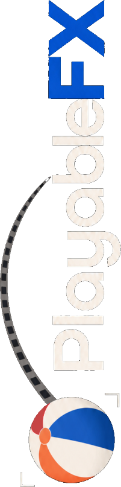
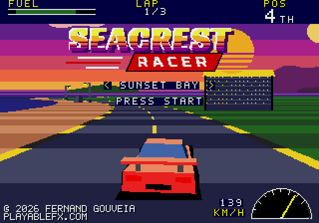
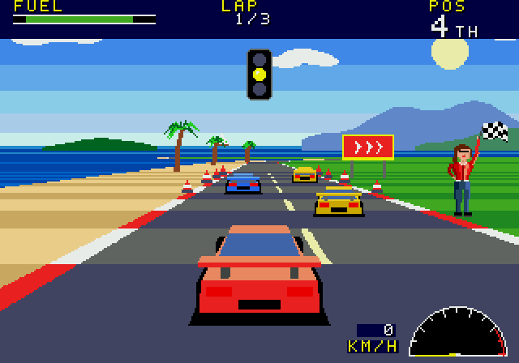
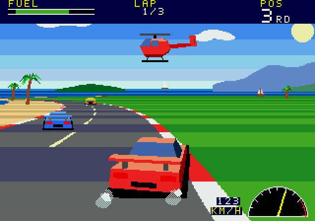
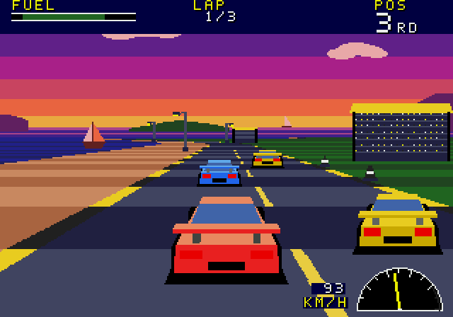
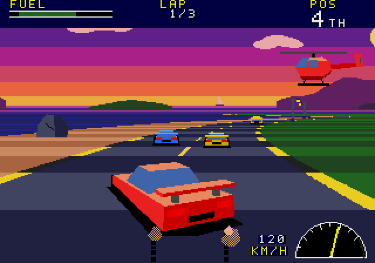
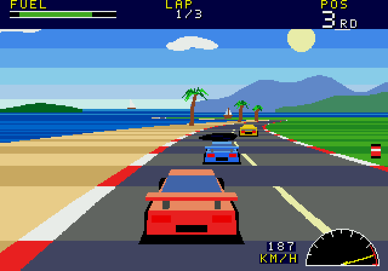
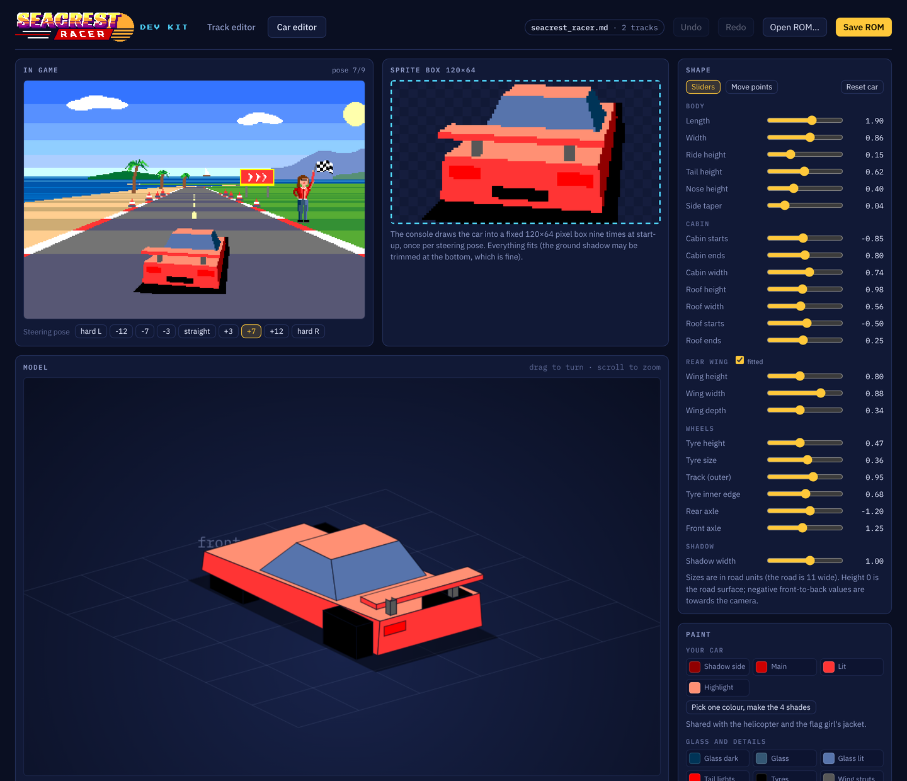

SEACREST RACER

16-BIT ARCADE RACING1 PLAYER

3DPOLYGON
CAR
CAR
Instruction ManualCARTRIDGE ROM · EMULATOR · FLASH CART
© 2026

The coast road is closed, the grandstands are full and the starter is already on the line with her flag. You have one red car, a tank of fuel and three laps to beat the field.
Seacrest Racer is an arcade racer for 16-bit home consoles. The road rushes at you in pseudo-3D, palms and sailboats sweep past, a helicopter shadows the leaders, and your car is a real polygon model, redrawn by the console itself every time you start the game.
Seacrest Racer is a standard 256 KB cartridge ROM file called seacrest_racer.md. It runs in any accurate emulator, and is built to run on original 16-bit Sega hardware through a flash cartridge (real-console testing is still to come, so please report what you find).
| ◀ ▶ | Steer. The longer you hold, the harder the car turns. |
| A or C | Accelerate. The 5-speed gearbox shifts by itself. |
| B | Brake. |
| B + ◀/▶ | Drift: brake and steer together above half speed to swing the tail out and turn tighter. |
| START | Start a race from the title screen; skip the results screen. |
| ◀ ▶ on title | Choose the course. |

The title screen runs a demo lap of the selected course behind the logo: here, Sunset Bay.
The name between the arrows is the course you'll race. Press ◀ or ▶ to flip through the courses on the cartridge. The scenery and colours behind the logo change as you go, so you can see where you're headed.
The standard cartridge has two courses, Seacrest Coast and Sunset Bay. A cartridge edited with the Dev Kit can hold up to four.
Press START. The field lines up on the grid, the starter raises her flag and the lights run red, amber, green.


1 2 3 4 5| CHECKPOINT | You passed the halfway checkpoint and got extra fuel. |
| REFUEL! | Lap completed, fuel added. |
| FINAL LAP | One more to go. |
| FINISH! / OUT OF FUEL | Race over. Press START to return to the title. |
You start fourth, behind one blue and two yellow rivals. Wait for green: the race begins when the light changes and "GO!" appears.
There's no countdown timer. Instead you race against your fuel gauge. Each course sets how much fuel you start with and how much you get back at the checkpoint and at the end of each lap. Drive cleanly and there's plenty; lose time in the walls and it gets tight.
Complete all the laps (three on the standard courses) before the fuel runs out. Your finishing position is locked in the moment you cross the line.
The road is lined with kerbs and barriers. Run into the edge and you'll scrape along it, losing speed with every hit. You can't leave the road, so the fastest way round is to stay off the edges.

Sunset Bay's grandstand straight. A camera helicopter also flies over at certain points on each course; it's harmless scenery.
Above half speed, hold B and steer into a bend. The tail swings out, the tyres squeal and smoke, and the car turns much faster than steering alone. Let go of B as the bend straightens to keep your speed.

Bends show up early on the horizon. Move to the outside before the bend, cut to the inside through it, and let the car drift back out on the exit. Smooth steering keeps more speed than sawing at the pad.

Oil slick. Drive over one and the car fishtails for about a second. Steering barely responds until it grips again, so steer around slicks if you can.
Loose tyre. Hitting a tyre lying in the road knocks off about an eighth of your speed.
The standard courses have no hazards. They appear on courses built with the Dev Kit.
A beach road between palms and the open sea. Long sweepers, two flyovers by the camera helicopter, billboards and a grid lined with cones.
A shorter, twistier evening circuit under street lamps, with rocks along the shore and grandstands at the start.
Seacrest Racer comes with a no-code software development kit: a track editor and a car editor in a single web page. Open seacrest_devkit.html in Chrome, Firefox or Edge (no internet needed), change what you like and press Save ROM. You get a new cartridge file that runs on emulators and real hardware. Nothing to compile.

The track editor: driver's-view preview, course map, settings, colours and the course strip.

The car editor: in-game view, the console's 120×64 sprite box, and a 3D model you can turn and reshape.
| Courses | Name, length, laps, bends, fuel, checkpoint, helicopter timing |
| Colours | Sea, sand, grass, road, kerbs, sky, hills, sun, palms (all limited to the console's 512 colours) |
| Scenery | Palms, sailboats, billboards, lamps, cones, grandstands, rocks, shrubs, umbrellas, tyre walls, oil drums, flag girl |
| Hazards | Oil slicks and loose tyres |
| Your car | Shape (sliders or by moving points), paint, rival paint, top speed, acceleration, steering, drift, brakes, grip |
Game design, art direction and testing: Fernand Gouveia / PlayableFX.com.
AI assistance: Claude, an AI model by Anthropic, generated the 68000 C and assembly code and the documentation, and helped reverse-engineer and understand the console hardware.
Logo lettering set in Racing Sans One and Russo One; this manual in IBM Plex. All are open-licensed typefaces (SIL Open Font License).
Seacrest Racer and the Seacrest Racer Dev Kit are licensed under the PolyForm Noncommercial License 1.0.0.
Seacrest Racer is an independent fan homage to 1990s arcade racers and is not affiliated with, endorsed by or connected to Sega, Bandai Namco or any other publisher. Sega, Genesis and Mega Drive are trademarks of Sega Corporation.
github.com/renderedsheep/seacrest-racer